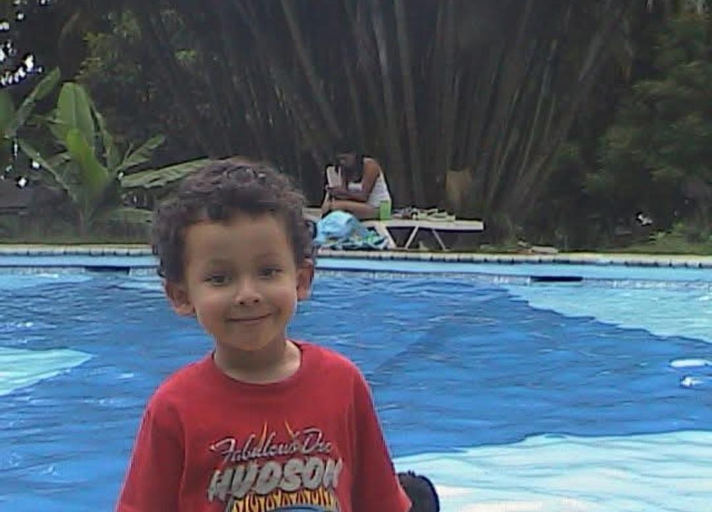

Foto 1
Foto 2

Los valores son la base de mi comportamiento y me guían en mi vida diaria. Los más importantes para mí son:
Responsabilidad: Cumplir con mis obligaciones y asumir las consecuencias de mis actos.
Honestidad: Ser sincero en todo momento, tanto conmigo mismo como con los demás.
Respeto: Valorar a todas las personas, independientemente de sus diferencias.
Solidaridad: Ayudar a los demás sin esperar algo a cambio.
Amabilidad y Tolerancia: Ser cortés con los demás y aceptar diferentes puntos de vista.
Civismo y Patriotismo: Respetar las normas y contribuir al bienestar de mi país.
Empatía y Equidad: Comprender a los demás y promover la igualdad de oportunidades.